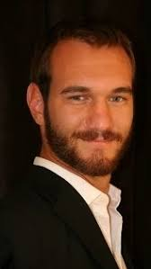

A Tribute to Nick vujicic
Nick Vujicic is an Australian motivational speaker and Christian evangelist who was born without arms or legs, has a markable legacy.
Biography of Nick Vujicic
Nicholas James Vujicic Born on December 4, 1982. He is an Australian motivational speaker and Christian evangelist.
Nick Vujicicwas born in Australia on 4 december 1982.Although he was an otherwise healthy baby, Nick was born without arms and legs; he had no legs, but two small feet, one of which had two toes.Nick has two siblings, Michelle and Aaron.
Initially, a Victoria state law prevented Nick from attending a mainstream school due to his physical disability in spite of a lack of mental impairment. However, Vujicic became one of the first physically disabled students integrated into a mainstream school once those laws changed. However, his lack of limbs made him a target for school bullies, and he fell into a severe depression. At age eight, he contemplated suicide and even tried to drown himself in his bathtub at age ten; his love for his parents prevented him from following through. He also stated in his music video "Something More" that God had a plan for his life and he could not bring himself to drown because of this.
Nick writes with two toes on his left foot and a special grip that slid onto his big toe. He knows how to use a computer and can type up to 45 words per minute using the "heel and toe" method. He has also learned to throw tennis balls, play drum pedals, get a glass of water, comb his hair, brush his teeth, answer the phone and shave, in addition to participating in golf, swimming, and even sky-diving.
During secondary school, he was elected captain of MacGregor State in Queensland and worked with the student council on fundraising events for local charities and disability campaigns. When he was seventeen, he started to give talks at his prayer group, and later founded his non-profit organization, Life Without Limbs.
Key Achievements of
Nick Vujicic
Books: Wrote Life Without Limits: Inspiration for a Ridiculously Good Life, Love Without Limits: A Remarkable Story of True Love Conquering All, and Unstoppable: The Incredible Power of Faith in Action.
Speeches: Delivered motivational speeches in over 70 countries.
Awards: Received the Australian Young Citizen Award in 1990.
Showed people with disabilities that they can pursue their dreams.
Inspired entrepreneurs to cultivate confidence, courage, and self-belief.
Challenged people to embrace their uniqueness and face their challenges.
Legacy
1.He's a global ambassador for disability rights and inclusion.
2.He's taught students how to make good changes in their lives and communities through his "Attitude Is Altitude" curriculum.
3.He's inspired millions to embrace their uniqueness and pursue their passions.
4.He's delivered motivational speeches in over 70 countries.
5.He's worked with education ministries of various nations.
6.He's live streamed his anti-bullying messaging to youth.
7.He's met 25 Presidents, Prime Ministers, and Vice Presidents.
Nick's story is not just about overcoming physical challenges, but also about overcoming the barriers of the mind. His achievements also showed people with disabilities that if he, born without hands or limbs, could achieve his dreams and become a speaker on global stages, then they too can pursue their dreams.